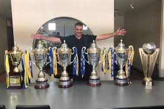

|
|
El Club Deportivo Motagua (Las Águilas Azules, El "Ciclón Azul" o Los Mimados) nació para ser uno de los grandes protagonistas del fútbol catracho.
La dedicación de sus directivos, el apoyo incondicional de sus aficionados, de jugadores y cuerpo de técnicos a través de su larga historia, han hecho del ‘Ciclón Azul’ una de las instituciones deportivas más respetadas del fútbol catracho.
Este Club de Fútbol, fue fundado el 29 de agosto de 1928 por el poeta y deportista: Marco Antonio Ponce, y el señor Marco Antonio Rosa entre otros.
Estos, bautizaron al equipo como ‘Motagua’, mismo nombre del río que por algún tiempo; fue motivo de conflicto entre Honduras y Guatemala.
Hoy en día, el Río Motagua sirve de zona limítrofe entre las dos naciones al final de su largo trayecto.
Así como es la trayectoria de este río, así es el historial del Club Deportivo Motagua, que con la dedicación y aportación de directivos como:
Don Pedro Atala Simón, Marco Tulio Gutiérrez, Leónidas Rosa Bautista, Eduardo Atala, Pedro Atala, Cristóbal Simón, Juan Ángel Arias, Javier Atala, Edgardo Zúñiga, Manuel Cáceres, etc. Estos, han dirigido al 'Ciclón Azul' de una manera sabía, para hacerlo; un cuadro triunfador.
Don Pedro Atala Simón, Marco Tulio Gutiérrez, Leónidas Rosa Bautista, Eduardo Atala, Pedro Atala, Cristóbal Simón, Juan Ángel Arias, Javier Atala, Edgardo Zúñiga, Manuel Cáceres, etc. Estos, han dirigido al 'Ciclón Azul' de una manera sabía, para hacerlo; un cuadro triunfador.
|



|
|